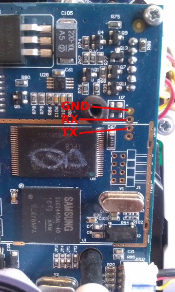

<html>
<head>
  <title>Karotz</title>
</head>
<body>

<h1>Ultimate guide bricking a Karotz</h1><b style="background-color:#ffff00">WARNING: DON&rsquo;T TRY THIS AT HOME UNLESS YOU UNDERSTAND EXACTLY WHAT YOU ARE DOING.</b>

<br/>

<p><a href="karotzator.html"></a></p>

<b style="background-color:#ffff00">SHUT UP AND SHOW ME <a href="#root">INSTRUCTIONS HOW TO ROOT KAROTZ</a> AND <a href="#hardware">HOW TO BRICK IT</a>.</b>

<p><a href="http://epicmonkey.livejournal.com/31616.html">After 8 or so months</a>, I decided to write a separate post how to root karotz.</p>

<p>Just in case you need this (which is super unlikely I think) here's more or less complete list of <a href="hardware.html">Karotz hardware</a>.</p>

<h2>USB communications</h2>

<p>Communicates with Swiss-army python daemon.</p>

<h3>Supported commands</h3>
<ul><li>ping</li>
<li>start_syslogd</li>
<li>stop_syslogd</li>
<li>get_syslogd</li>
<li>set_pass</li>
<li>reboot</li>
<li>get_id</li>
<li>get_sys_version</li>
<li>get_rootfs_version</li>
<li>get_mac</li>
<li>get_networks</li>
<li>set_wifi</li>
<li>set_ip</li>
<li>get_ip</li>
<li>is_connected</li>
<li>set_country</li>
<li>get_iwlist</li>
<li>get_version</li>
<li>get_wifi_status</li>
</ul>

<h3>Examples</h3>

<b>ping</b>
<pre>{"cmd":"ping"}
3
{
    "response": "OK"
}</pre>

<b>start_syslogd</b>
<pre>{"cmd":"start_syslogd"}
3
{
    "response": "OK"
}</pre>

<b>stop_syslogd</b>
<pre>{"cmd":"stop_syslogd"}
3
{
    "response": "OK"
}</pre>

<b>get_syslogd</b>
<pre>{"cmd":"get_syslogd"}
4
{
    "log": "Jan  1 01:16:32 karotz user.debug Multimedia[1587]: Multimedia: I have received a SIGCHLD. from mlayer\n
Jan  1 01:16:32 karotz user.debug Multimedia[1587]: multimedia_api_newStatus : 0\n
Jan  1 01:16:32 karotz user.debug Multimedia[1587]: multimedia_api_newStatus signal play finished\n
Jan  1 01:16:32 karotz user.debug Multimedia[1587]: sendSignal_playFinished. uid : \n
Jan  1 01:16:32 karotz user.debug Multimedia[1587]: sendSignal_playFinished. done\n", 
    "response": "OK"
}</pre>

<b>set_pass</b>. As I remember it sets Mindscape password
<pre>{"cmd":"set_pass", ???}</pre>

<b>reboot</b>
<pre>{"cmd":"reboot"}
3
{
    "response": "OK"
}
</pre>

<b>get_id</b>
<pre>{"cmd":"get_id"}
4
{
    "id": "<id>", 
    "response": "OK"
}</pre>

<b>get_sys_version</b>
<pre>{"cmd":"get_sys_version"}
4
{
    "response": "OK", 
    "version": "12.03.29.00"
}</pre>

<b>get_rootfs_version</b>
<pre>{"cmd":"get_rootfs_version"}
4
{
    "response": "OK", 
    "version": "12.03.29.00"
}</pre>

<b>get_mac</b>
<pre>{"cmd":"get_mac"}
4
{
    "mac": "00:0E:8E:2D:24:EC", 
    "response": "OK"
}</pre>

<b>get_networks</b>
<pre>{"cmd":"get_networks"}
13
{
    "networks": [
        {
            "Address": "00:1E:58:C0:DE:F1", 
            "Channel": 6, 
            "Detail": "CCMP/PSK", 
            "Encryption": "WPA2", 
            "Name": "eden", 
            "Quality": 52
        }
    ], 
    "response": "OK"
}</pre>

<b>set_wifi</b>
<pre>{"cmd":"set_wifi","encryption":"wpa","ssid":"eden","settings":
{"ssid":"\"eden\"","scan_ssid":1,"proto":"WPA","key_mgmt":"WPA-PSK","psk":"\"1234567890\""}}</pre>

<b>set_ip</b>
<pre>{"cmd":"set_ip","dhcp":true}
3
{
    "response": "OK"
}</pre>

<pre>{"cmd":"set_ip","ip":"192.168.0.103","netmask":"255.255.255.0","gateway":"192.168.0.1","nameserver":"8.8.8.8"}
3
{
    "response": "OK"
}</pre>

<b>get_ip</b>
<pre>{"cmd":"get_ip"}
4
{
    "ip": "192.168.0.103", 
    "response": "OK"
}</pre>

<b>is_connected</b>
<pre>{"cmd":"is_connected"}
3
{
    "response": "OK"
}</pre>

<b>set_country</b>
<pre>{"cmd":"set_country","code":"US"}
3
{
    "response": "OK"
}</pre>

<b>get_iwlist</b>
<pre>{"cmd":"get_iwlist"}
4
{
    "data": "wlan0     Scan completed :\n
          Cell 01 - Address: 00:1E:58:C0:DE:F1\n
                    ESSID:\"eden\"\n
                    Mode:Master\n
                    Channel:6\n
                    Frequency:2.437 GHz (Channel 6)\n
                    Quality=52/100  Signal level:-46 dBm  \n
                    Encryption key:on\n
                    IE: Unknown: 00046564656E\n
                    IE: Unknown: 010882848B0C12961824\n
                    IE: Unknown: 030106\n
                    IE: IEEE 802.11i/WPA2 Version 1\n
                        Group Cipher : CCMP\n
                        Pairwise Ciphers (1) : CCMP\n
                        Authentication Suites (1) : PSK\n
                    IE: Unknown: 2A0100\n
                    IE: Unknown: 32043048606C\n
                    IE: Unknown: DD0900037F01010020FF7F\n
                    IE: Unknown: DD050050F20500\n
                    IE: Unknown: \n
                    Bit Rates:1 Mb/s; 2 Mb/s; 5.5 Mb/s; 11 Mb/s; 6 Mb/s\n
                              9 Mb/s; 12 Mb/s; 18 Mb/s; 24 Mb/s; 36 Mb/s\n
                              48 Mb/s; 54 Mb/s\n
                    Extra:tsf=00000001370c2181\n
                    Extra: Last beacon: 2685ms ago\n\n", 
    "response": "OK"
}</pre>

<b>get_version</b>
<pre>{"cmd":"get_version"}
4
{
    "response": "OK", 
    "version": 1.0
}</pre>

<b>get_wifi_status</b>
<pre>{"cmd":"get_wifi_status"}
4
{
    "response": "OK", 
    "status": "00:1E:58:C0:DE:F1"
}</pre>

<h3>Practical examples</h3>

<b>Connect to WEP WiFi</b>

<pre>{"cmd":"set_country","code":"US"}
{"cmd":"set_pass","pwd":"1234567890"}
{"cmd":"set_wifi","encryption":"wpa","ssid":"eden","settings":{"ssid":"\"eden\"","scan_ssid":1,"proto":"WPA","key_mgmt":"WPA-PSK","psk":"\"1234567890\""}}
{"cmd":"set_ip","dhcp":true}</pre>

<b>Connect to WPA2 WiFi</b>

<pre>{"cmd":"set_country","code":"US"}
{"cmd":"set_pass","pwd":"1234567890"}
{"cmd":"set_wifi","encryption":"wpa2","ssid":"eden","settings":{"ssid":"\"eden\"","scan_ssid":1,"psk":"\"1234567890\""}}
{"cmd":"set_ip","dhcp":true}</pre>

<h2>Karotz registration in Violet network</h2>

<p>http://www.karotz.com/install?ulogin=&upsw=<your_password>&kid=<karotz_id>
where <karotz_id> can be obtained by sending command: <code>get_id</code>, which is generated by script:</p>
<pre>os.popen("echo "+ __get_mac() +" 'AC353EFA-2B04-45BA-9BDA-FEEFA43BB640' | md5sum | cut -d' ' -f1")</pre>

<p>I've found another way to register your Karotz in Violet network:
<ul>
<li>Download the archive from http://www.karotz.com/my/usbkey page</li>
<li>Remember the content of file uuid.conf as UUID (this is your user id). This is a string in a form of aaaaaaaa-aaaa-aaaa-aaaa-aaaaaaaaaaaa</li>
<li>Run via usb get_id cmd (look for the reference above, {"cmd":"get_id"}) and remember it as ID. This is 30 symbols length string</li>
<li>Get md5 of /karotz/etc/gpg/pubring.gpg file and remember this string as SIGN. Most likely it equals to f9242e4ba243279123b1cd0a02528a31</li>
<li>Concat UUID, ID, SIGN and get md5 of this string. This is say HASH</li>
<li>Open link http://www.karotz.com/install/UUID/ID/HASH and save the response. This is your Karotz password</li>
<li>Set karotz password with the usb command {"cmd":"set_pass","pwd":"<password>"}</li>
<li>Reboot karotz {"cmd":"reboot"} and that's all. Your karotz is registered in Violet network.</li>
</ul>
</p>

<h2>Useful files</h2>

<h3>Installer</h3>

<p>Java installer: http://karotz.s3.amazonaws.com/installer/Karotz_setup.jar</p>

<p>Flash factory firmware: http://www.karotz.com/plug/flashage and https://s3.amazonaws.com/karotz/installer/key-factory.zip (it's the main proof Karotz can be rooted using USB flash)</p>

<h3>Rootfs and yaffs</h3>

<b>yaffs</b>
<ul>
<li>http://update.karotz.com/yaffs/yaffs-11.03.11.01.tar.gz</li>
<li>http://update.karotz.com/yaffs/yaffs-11.03.11.02.tar.gz</li>
<li>http://update.karotz.com/yaffs/yaffs-11.03.12.00.tar.gz</li>
<li>http://update.karotz.com/yaffs/yaffs-11.03.12.01.tar.gz</li>
<li>http://update.karotz.com/yaffs/yaffs-11.03.12.02.tar.gz</li>
<li>http://update.karotz.com/yaffs/yaffs-11.03.15.00.tar.gz</li>
<li>http://update.karotz.com/yaffs/yaffs-11.03.16.00.tar.gz</li>
<li>http://update.karotz.com/yaffs/yaffs-11.03.16.01.tar.gz</li>
<li>http://update.karotz.com/yaffs/yaffs-11.03.16.02.tar.gz</li>
<li>http://update.karotz.com/yaffs/yaffs-11.04.01.01.tar.gz</li>
</ul>

<b>eabi yaffs</b>
<ul>
<li>http://update.karotz.com/eabi/yaffs/yaffs-11.04.01.06.tar.gz</li>
<li>http://update.karotz.com/eabi/yaffs/yaffs-11.04.19.02.tar.gz</li>
<li>http://update.karotz.com/eabi/yaffs/yaffs-11.04.20.02.tar.gz</li>
<li>http://update.karotz.com/eabi/yaffs/yaffs-11.05.16.00.tar.gz</li>
<li>http://update.karotz.com/eabi/yaffs/yaffs-11.06.10.00.tar.gz</li>
<li>http://update.karotz.com/eabi/yaffs/yaffs-11.07.01.00.tar.gz</li>
<li>http://update.karotz.com/eabi/yaffs/yaffs-11.07.07.00.tar.gz</li>
<li>http://update.karotz.com/eabi/yaffs/yaffs-11.11.14.00.tar.gz</li>
<li>http://update.karotz.com/eabi/yaffs/yaffs-12.03.29.00.tar.gz</li>
</ul>

<b>rootfs</b>
<ul>
<li>http://update.karotz.com/eabi/rootfs/rootfs-11.04.01.12.tar.gz</li>
<li>http://update.karotz.com/eabi/rootfs/rootfs-11.06.10.00.tar.gz</li>
<li>http://update.karotz.com/eabi/rootfs/rootfs-11.07.01.00.tar.gz</li>
<li>http://update.karotz.com/eabi/rootfs/rootfs-11.07.07.00.tar.gz</li>
</ul>

<h3>rootfs and yaffs latest versions</h3>

<p>All of them are signed by md5+pgp pair -- there's no way to substitute them for a bricked one.</p>

<b>rootfs</b>

http://update.karotz.com/eabi/rootfs_version

<pre>-----BEGIN PGP SIGNED MESSAGE-----
Hash: SHA1

12.03.29.00
http://update.karotz.com/eabi/rootfs/rootfs-12.03.29.00.tar.gz 7669e685dac777fc2e194ea6f7ef5c09
-----BEGIN PGP SIGNATURE-----
Version: GnuPG v1.4.11 (GNU/Linux)

iQEcBAEBAgAGBQJPdCyjAAoJEDV3C7tYF9eU+isIAJ1I92r+1G1inNikmFQC5xRP
KmYJuAdOOvBHNO2TY86c1vQpbzfgLmLjM1Vr3O8grDc0dWRKOqJYo724l1aahpEz
Kma/uHXZKMiJlUFijkURKfL/88uyc/0kC4MxeyqMF2J2GHLLgqE5QuWTImA8e4nN
sUrXdLWUqcKjBAMymXqMHOr1Y8FdMp4Mcdaft6N8iBMP06AfDeua5+rz/LrBU2n+
MAQj9+DVqeFCeE/SNhUL9ao/YmbOUefovI4AYvFQo67gUJjIiNVRMjmOA7Sp7Iee
IjkkgCP3ObySS134rBYc7KpGFWyDgIA5eoIavGMo4u9LkYGwEa8+IWRg/5OuQrk=
=eRwW
-----END PGP SIGNATURE-----</pre>

<b>yaffs</b>

http://update.karotz.com/eabi/yaffs_version

<pre>-----BEGIN PGP SIGNED MESSAGE-----
Hash: SHA1

12.03.29.00
12.03.29.00
http://update.karotz.com/eabi/yaffs/yaffs-12.03.29.00.tar.gz 1ff2d9e4455c0ae67bf51d616ce85540
-----BEGIN PGP SIGNATURE-----
Version: GnuPG v1.4.11 (GNU/Linux)

iQEcBAEBAgAGBQJPdCysAAoJEDV3C7tYF9eUwKAIAJvjvDvIrCOmMggnmw4W0m5b
lmt+jqEA1Fe5yXDUW1mLXb1TGV8cnY/Ze4UKvWATiR9OjtJ7R7faEla5y7lPbVIZ
QYq2+DdJx7WdG763j7c1pWulgKcGAqclcswzgRxboLFNF4iqMwC/Fh2w0NQZV8YX
ksldq6ykt7OzmY3+FDwaS0O7g+5u6PyIdzKH5L7or6UzXcUuClXovqFB49K7aUl+
Jgs2X7inzTyUGe3L/nm8b/uCQQfRYYAlU9s6GqEV5/o9Ou4L6QNY97O1IC8S1GA1
t5YKnP7CPSWetTLAFN3F7YW3BrPaaG1o3VS8svhgexneL5Y3MXYYcDpmumI+oxI=
=3t3E
-----END PGP SIGNATURE-----</pre>

<b>yaffs</b>

http://update.karotz.com/yaffs_version

<pre>-----BEGIN PGP SIGNED MESSAGE-----
Hash: SHA1

11.04.01.01
11.03.11.03
http://update.karotz.com/yaffs/yaffs-11.04.01.01.tar.gz c380e79ed13923608c65cdffd235edc3
-----BEGIN PGP SIGNATURE-----
Version: GnuPG v1.4.10 (GNU/Linux)

iQEcBAEBAgAGBQJNlc5MAAoJEDV3C7tYF9eUr7EH/2DNqrcskaB+Ovuq0qmNA8z0
MqOaZaweh5LQWIJPbqgt+CW5tdS9TEN1cOPggQtLJlYyZxqLq0aDBBMdbk0DP0bz
CzFUIC3iHTCMcHYnS2l6FsdFbkgkqJIyeiqhpgygB1VmlY+7Mg6BoYUfta0td4Cj
c40szXn3GrizogxAfkzpctsaHzDk+fMoTBN77+xahmxlGLVvnc1GN5q8DxGnUxKd
29j/LImombqxXz2Igi48oxycfHtXv63BKdEuvXfif+J/EaYArCMcI/E9+gzQQUlT
xkifUQtgxvSYPNdkvrstwqMEgyZtFpKRK7yE+9LUp7rxszqjOTGFP++8p23hJlE=
=Rp/n
-----END PGP SIGNATURE-----</pre>


<h2>Update syslog</h2>

<pre>{"cmd":"get_syslogd"}
4
{
   "log": "Jan  1 00:00:13 karotz syslog.info syslogd started: BusyBox v1.16.1
Jan  1 00:00:14 karotz user.info init: starting pid 1336, tty '': '/karotz/scripts/karotz_init.sh'
Jan  1 00:00:14 karotz user.info init: starting pid 1337, tty '': '/karotz/bin/power'
Jan  1 00:00:14 karotz user.info init: starting pid 1338, tty '': '/usr/scripts/miniusb_read.sh'
Jan  1 00:00:14 karotz user.notice root: [INIT] clean yaffs found
Jan  1 00:00:14 karotz user.notice root: [INIT] yaffs start
Jan  1 00:00:14 karotz user.notice root: [START] starting yaffs.
Jan  1 00:00:15 karotz user.notice root: [START] setting wifi country
Jan  1 00:00:16 karotz user.notice root: [START] loading wifi config
Jan  1 00:00:30 karotz user.notice root: [START] asking for ip
Jan  1 00:00:30 karotz user.notice root: udhcpc_script. deleting routers
Jan  1 00:00:30 karotz user.notice root: udhcpc_script. adding dns 192.168.0.1
Jan  1 00:00:31 karotz user.notice root: [START] network is ready to go
Jan  1 00:00:32 karotz user.notice root: [START] checking updates.
Jan  1 00:00:32 karotz user.notice root: [UPDATE] updating rootfs.
Jan  1 00:00:32 karotz user.notice root: [UPDATE] rootfs version: 11.03.12.00
Jan  1 00:00:32 karotz user.notice root: [UPDATE] could not load version.
Jan  1 00:00:32 karotz user.notice root: [UPDATE] updating yaffs.
Jan  1 00:00:33 karotz user.notice root: [UPDATE] sys version: 10.10.10.10.
Jan  1 00:00:33 karotz user.notice root: [UPDATE] rootfs version: 11.03.12.00.
Jan  1 00:00:34 karotz user.notice root: [UPDATE] downloading.
Jan  1 00:00:34 karotz user.notice root: Stopping yaffs
Jan  1 00:03:10 karotz user.notice root: [UPDATE] checking integrity.
Jan  1 00:03:26 karotz user.notice root: Stopping yaffs
Jan  1 00:03:26 karotz user.notice root: [UPDATE] cleanup_yaffs.
Jan  1 00:03:28 karotz user.notice 0: [UPDATE] extract.
Jan  1 00:04:17 karotz user.notice 0: [UPDATE] pre_install.
Jan  1 00:04:17 karotz user.notice 0: [UPDATE] extracting rootfs system from the yaffs package.
Jan  1 00:04:21 karotz user.notice 0: [UPDATE] installing EABI rootfs.
Jan  1 00:04:21 karotz user.notice 0: [ROOTFS INSTALL] flash erasing /dev/mtd1
Jan  1 00:04:21 karotz user.notice 0: [ROOTFS INSTALL] writing new zImage
Jan  1 00:04:21 karotz user.notice 0: [ROOTFS INSTALL] flash erasing /dev/mtd2
Jan  1 00:04:22 karotz user.notice 0: [ROOTFS INSTALL] writing new rootfs
Jan  1 00:04:24 karotz user.notice 0: [UPDATE] extract_sys.
",
   "response": "OK"
}</pre>

<h2>Applications</h2>

<p>Download javascript application: http://apps.karotz.com/file/&lt;uuid&gt;/&lt;version&gt;/get</p>

<p>No auth required to download an application, for example:
http://apps.karotz.com/file/fc587216-a572-4c16-85ee-be331de35e40/0.2.0/get</p>

<h2><a name="root">Software root</a></h2>

<b>linuxrc and mounted zImage</b>

<pre># if there is a signed autorun in a usb key, let's run it
# the directory in which the autorun is located
GNUPGHOME=/karotz/etc/gpg
GPG="/bin/gpg -quiet --lock-never --ignore-time-conflict --homedir $GNUPGHOME"
if [ -x /mnt/usbkey/autorun -a -f /mnt/usbkey/autorun.sig ] ; then
   echo "Launching autorun if present"
	$GPG --verify /mnt/usbkey/autorun.sig 2>/dev/null && /mnt/usbkey/autorun
fi</pre>

<p>gpg --verify accepts either signature or signed message, however it works quite differently for these cases.</p>

<p>i.e.</p>

<p>gpg --verify &lt;signature&gt; checks both signature and file, which is supposed to work on Karotz by default.</p>

<p>however for the second case, when gpg --verify accepts a signed message it acts quite differently, basically just verifies that signed message is signed and signed right.</p>

<p>so if we pass to gpg a signed message from http://update.karotz.com/eabi/rootfs_version:</p>

<pre>-----BEGIN PGP SIGNED MESSAGE-----
Hash: SHA1

11.04.01.01
11.03.11.03
http://update.karotz.com/yaffs/yaffs-11.04.01.01.tar.gz c380e79ed13923608c65cdffd235edc3
-----BEGIN PGP SIGNATURE-----
Version: GnuPG v1.4.10 (GNU/Linux)

iQEcBAEBAgAGBQJNlc5MAAoJEDV3C7tYF9eUr7EH/2DNqrcskaB+Ovuq0qmNA8z0
MqOaZaweh5LQWIJPbqgt+CW5tdS9TEN1cOPggQtLJlYyZxqLq0aDBBMdbk0DP0bz
CzFUIC3iHTCMcHYnS2l6FsdFbkgkqJIyeiqhpgygB1VmlY+7Mg6BoYUfta0td4Cj
c40szXn3GrizogxAfkzpctsaHzDk+fMoTBN77+xahmxlGLVvnc1GN5q8DxGnUxKd
29j/LImombqxXz2Igi48oxycfHtXv63BKdEuvXfif+J/EaYArCMcI/E9+gzQQUlT
xkifUQtgxvSYPNdkvrstwqMEgyZtFpKRK7yE+9LUp7rxszqjOTGFP++8p23hJlE=
=Rp/n
-----END PGP SIGNATURE-----</pre>

<p>it will output:</p>

<pre>gpg: Signature made Fri 01 Apr 2011 05:08:28 PM MSK using RSA key ID 5817D794
gpg: Good signature from "KarotzDevTeam <admin@mindscape.fr>"
gpg: WARNING: This key is not certified with a trusted signature!
gpg:          There is no indication that the signature belongs to the owner.
Primary key fingerprint: C2A2 8CEE 04C3 4712 F371  6E58 3577 0BBB 5817 D794</pre>

<p>with exit code 0, which is a successful result, hence we can bypass that validation.</p>

<p>Here's a step-by-step instructions how to get root on Karotz:</p>
<ol>
<li>Get a signature at http://update.karotz.com/eabi/rootfs_version</li>
<li>Upload this signature to usb-flash as autorun.sig file.</li>
<li>Create an executable file "autorun" with shebang #!/bin/bash and copy it to the usb-flash.</li>
<li>Insert the usb flash to Karotz's ass and reboot it.</li>
<li>...</li>
<li>PROFIT.</li>
</ol>

<p>As an example you can enable telnet daemon with the following autorun file:</p>

<pre>#!/bin/bash

LED=/karotz/bin/led

if [ -f /etc/passwd.bak ]
then
  cp /etc/passwd.bak /etc/passwd
else
  cp /etc/passwd /etc/passwd.bak
fi

echo 'karotz::0:0:karotz:/usr/karotz:/bin/bash' >> '/etc/passwd'

[ -f /etc/init.d/telnet ] && . /etc/init.d/telnet start</pre>

<p>Now you can telnet into your Karotz with user karotz.</p>

<h2><a name="hardware">Hardware root</a></h2>

<p>Unscrew the Karotz and find four pins at the right top corner -- serial connection.</p>



<p>Connect GND to GND, RX to TX, TX to RX and switch the Rabbit on.</p>

<pre>************************************************************* 
*                                                           *
* Rabbit V3 - ( BIOS v1.16 )                                *
*                                                           *
*                                                           *
* PRAGMATEC/Point Core                                      *
 ************************************************************
FCLK=405MHz, HCLK=135MHz, PCLK=67MHz, CPU is running at 405MHz

Press ENTER to stop the autoboot
........................................Read chip id = adda
Nand flash status = e0
Set boot params = initrd=0x31800000,0x00500000 ...
Load Kernel...
Load Ramdisk...
Uncompressing Linux..............................
.................................................
.................................................
....................... done, booting the kernel.</pre>

<p>Press Enter</p>

<pre>Please select function : 
0 : Uart download file
1 : Write Nand flash with download file
2 : Load Pragram from Nand flash and run
3 : Erase Nand flash regions
4 : Test NAND flash
5 : Restore default partitions
6 : Set boot params</pre>

<p>Now we can change boot parameters to get root console. Press 6.</p>

<pre>Config parameters
[0] : bootpara is 0x00000001 (1)
[1] : cpuclk is 0x00000002 (2)
[2] : AUTORUN is 0x00000000 (0)
[3] : serial is 0x00000000 (0)
[4] : baudrate is 0x0001c200 (115200)
[5] : machine is 0x00000778 (1912)
[6] : runAddr is 0x30200000 (807403520)
[7] : rootfs is 0x00000000 (0)
[8] : tty is 0x00000004 (4)
[9] : initrdA is 0x31800000 (830472192)
[10] : initrdL is 0x00500000 (5242880)
[11] : memsize is 0x04000000 (67108864)
[12] : devfs is 0x00000000 (0)
[13] : ostore is 0x00000000 (0)
[14] : userpara is 0x00000000 (0)
[15] : Exit</pre>

<p>Enter 14 and add <code>console=ttySAC0,115200 init=/bin/sh</code> as user boot parameter. Now you can back to the previous menu by entering 15 and then press 2 to run Karotz.</p>

<p>After this you can add extra user with empty password:</p>
<pre>echo 'karotz::0:0:karotz:/usr/karotz:/bin/bash' >> '/etc/passwd'</pre>

<p>and start telnet daemon:</p>

<pre>/etc/init.d/telnet start</pre>

<p>That's it.</p>

<h2>Some random notes</h2>

<h3>DBus</h3>

<p>Karotz uses DBus to communicate with its Ears/Webcam/etc deamons.</p>

<p>We can introspect all available methods with dbus-send command:</p>
<pre>dbus-send --system --type=method_call --print-reply 
--dest=com.mindscape.karotz.Webcam /com/mindscape/karotz/Webcam 
org.freedesktop.DBus.Introspectable.Introspect</pre>

<p>For example to rotate Karotz left ear:</p>
<pre>dbus-send --system --type=method_call --print-reply 
--dest=com.mindscape.karotz.Ears /com/mindscape/karotz/Ears 
com.mindscape.karotz.KarotzInterface.move_left string:l int32:20 int32:10</pre>

<h3>Webcam</h3>

<pre>cat /dev/camera > stream.mpg</pre>

<p>I'm afraid I don't know yet which codec it uses to encode video. The best result I got is:</p>


<br/><br/>
--<br/>
em<br/>
<p>PS. the story of this rooting can be found in FrF by <a href="http://friendfeed.com/search?q=%23brickmykarotz">#brickmykarotz</a> tag</p>
<p>PPS. as a proof:<br/>
<object type="application/x-shockwave-flash" width="366" height="400" classid="clsid:D27CDB6E-AE6D-11cf-96B8-444553540000"> <param name="flashvars" value="intl_lang=en-us&amp;photo_secret=a6aa00aea4&amp;photo_id=7208385972"></param> <param name="movie" value="http://www.flickr.com/apps/video/stewart.swf?v=109786"></param> <param name="bgcolor" value="#000000"></param> <param name="allowFullScreen" value="true"></param><embed type="application/x-shockwave-flash" src="http://www.flickr.com/apps/video/stewart.swf?v=109786" bgcolor="#000000" allowfullscreen="true" flashvars="intl_lang=en-us&amp;photo_secret=a6aa00aea4&amp;photo_id=7208385972" height="400" width="366"></embed></object></p>

</body>
</html>
